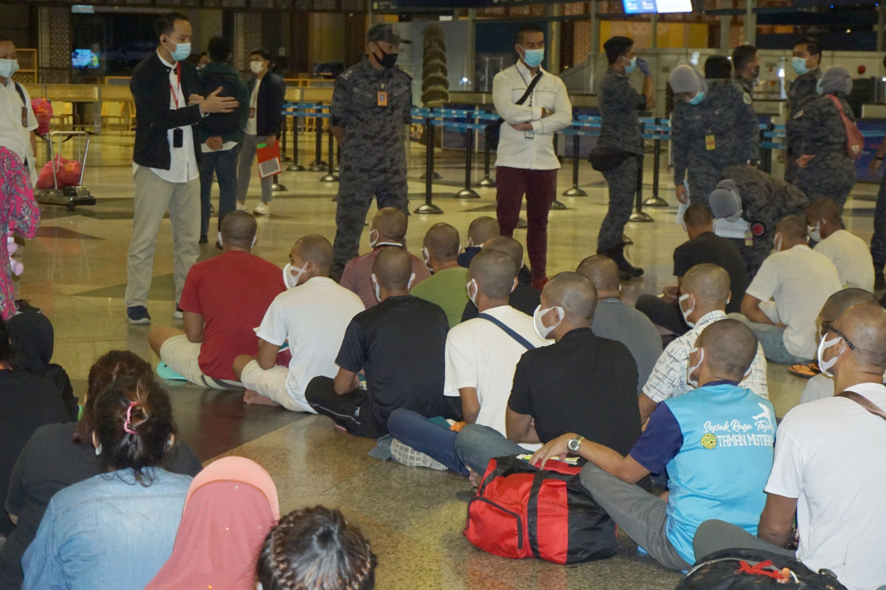
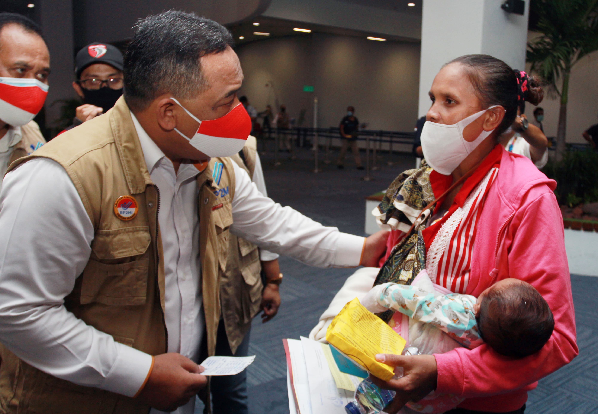

BARU sekitar tujuh bulan bekerja sebagai kepala pelayan di sebuah restoran di Kota Taif, Arab Saudi, Basuki Wiroso mesti menelan pil pahit. Dampak pandemi Covid-19 yang menghantui seluruh dunia turut menghantam tempat ia bekerja. Sebab, para Maret 2020, Arab Saudi memberlakukan lokcdown. Imbasnya, restoran tempat Basuki bekerja ditutup.
Bersama 27 pekerja migran Indonesia yang bekerja di restoran ini, Basuki memutuskan bertahan. "Sebab kalau berhenti sebelum kontrak ada pinalti, harus membayar 10 ribu riyal untuk iqamah plus denda, total bisa Rp 60 juta. Duit dari mana?," ujar Basuki kepada Tempo pada Senin, 23 November 2020. Padahal, kontrak kerja pria 48 tahun ini baru berakhir pada Agustus 2021.
Basuki, yang berangkat lewat sebuah agen resmi pada Juli 2019 mengatakan, selama tiga bulan dirumahkan perusahaan hanya memberi suplai makanan seadanya ke tempat tinggal mereka..
Ia mengatakan, bersama enam kawannya yang lain, sempat merasakan gejala seperti panas, demam, sulit bernapas dan indra penciuman tak berfungsi selama berhari-hari. Namun, kata dia, tidak ada bantuan fasilitas medis seperti rapid test atau swab dari perusahaan. “Kami hanya pasrah dan bertahan dengan cara kami sendiri. Kami cari rempah-rempah, kami rebus dan minum sampai akhirnya sembuh-sembuh sendiri,” ujar Basuki.
Basuki menyebut mengadukan persoalan ini ke perwakilan Serikat Buruh Migran Indonesia (SBMI) di Saudi hingga ke Konsulat Jenderal Republik Indonesia (KJRI). Ia mengatakan KJRI sempat turun tangan. Namun, gaji mereka pada Maret, sebelum lockdown belum juga dibayar.
Perwakilan SBMI Jeddah, Roland Kamal yang menerima aduan dari Basuki menyebut sudah berkoordinasi dengan KJRI Jeddah terkait laporan tersebut. “KJRI mengirimkan logistik makanan untuk mereka selama lockdown. KJRI juga mendatangi pihak manajemen perusahaan,” ujar Roland, Ahad, 22 November 2020.
Konsul Jenderal RI Jeddah, Eko Hartono mengatakan turun langsung mendatangi restoran tempat Basuki bekerja, setelah menerima pengaduan. "Ketika restoran itu sudah mulai beroperasi, saya sendiri datang ke sana dan bicara dengan pemilik restonya. Saya tekan supaya hak-hak PMI kita dibayarkan, akhirnya ada gaji yang sempat ditunda itu dibayarkan. Kecuali, ada satu bulan, tinggal gaji Maret, pemilik waktu itu janji akan bayar Desember ini," ujar dia, Jumat, 11 Desember 2020.
Tidak seperti Basuki, Henry Gunter Manik, yang juga bekerja di restoran tersebut memutuskan pulang ke Indonesia. Ia meminta bantuan KJRI untuk mengadvokasi kepulangannya. Beruntung, Henry tak perlu membayar penalti karena sudah bekerja selama setahun . Namun, ia mesti membayar sendiri tiket pesawat.
Pandemi tak hanya memukul pekerja migran resmi, mereka yang tak berdokumen juga kelimpungan karena tak menjadi prioritas bantuan sosial. Di Jepang, para pekerja migran bertahan di kebun stroberi karena problem lama sistem ketenagakerjaan pekerja migran. Pemerintah Indonesia pun kelimpungan karena pendataan yang masih acak-acakan.
Nestapa Bagi Yang Tak Berdokumen
Pekerja migran tanpa dokumen resmi tidak menjadi prioritas program bantuan pemerintah Indonesia maupun negara pemberi kerja. Para pekerja migran yang kebanyakan merupakan korban penipuan itu tidak meminta bantuan karena kuatir ditangkap.
SURYATI gundah memikirkan Siswadi yang terjebak pembatasan sosial oleh pemerintah Malaysia atau Movement Control Order (MCO), pada pertengahan Maret 2020. Lantaran pembatasan tersebut suaminya yang ada di Cheras, Kuala Lumpur, tak lagi boleh bekerja. Padahal uang hasil memeras keringat sebagai sopir truk di proyek konstruksi baru dia kirim ke Jember, Jawa Timur, sesaat sebelum isolasi. "Untungnya dia masih punya paket data, jadi saya tetap bisa komunikasi," kata perempuan 38 tahun itu kepada Tempo, Jumat, 4 Desember 2020.
Di tengah kekalutan, Suryati mencoba meminjam uang ke beberapa temannya yang menjadi Pekerja Migran Indonesia (PMI) di Malaysia agar Siswadi tetap bisa makan. Tapi rekannya di negeri jiran itu tak bisa membantu karena berada di posisi yang sama, terisolasi tanpa penghasilan.
Ibu satu anak ini melanjutkan usahanya dengan mengontak mantan bosnya di Malaysia. Suryati sempat lega karena eks majikannya bersedia mengirimkan uang. Masalah lain muncul, suami Suryati yang sudah berumur 50 tahun itu tidak memiliki rekening. "Makanya saya susah sekali waktu itu. Saya yang di rumah pun kebingungan," kata Suryati.
Suryati kemudian menghubungi pengurus Migrant Care Jember. Melalui lembaga nirlaba yang bergerak di bidang perlindungan migran ini, dia bisa berkomunikasi dengan Kedutaan Besar Republik Indonesia (KBRI) di Malaysia. Kedutaan meminta Suryati mengisi data-data agar suaminya yang berstatus pekerja tanpa dokumen resmi (undocumented worker) itu bisa mendapat bantuan.
Beberapa waktu setelah itu Siswadi mengabarkan dia mendapat pesan dari KBRI untuk mengambil paket sembilan bahan pokok. Tapi ia tak bisa menjangkau bantuan tersebut karena lokasi pengambilannya berjarak satu jam perjalanan menggunakan taksi online. "Sedangkan waktu lockdown itu, orang tidak boleh keluar lebih dari 10 kilometer," kata Suryati. Siswadi akhirnya punya bekal bertahan hidup setelah seorang kawan melunasi hutang kepadanya.
"Terus perlahan-lahan masa lockdown mulai berkurang. Sekarang Siswadi sudah kerja lagi, meskipun gak penuh," ujar Suryati.
Koordinator Migrant CARE Kuala Lumpur, Alex Ong mengatakan, PMI tanpa izin kerja adalah kelompok paling rentan selama pembatasan sosial. Di Malaysia, mereka yang masuk dalam kategori Pendatang Asing Tanpa Izin (PATI) itu menghadapi masalah fundamental, yakni kekurangan pangan.
Menurut Alex, mayoritas PATI di Malaysia adalah pekerja harian yang tidak punya tabungan. Sementara hampir segala aktivitas di Malaysia, termasuk bekerja, berhenti seketika semenjak pemerintah Malaysia memberlakuan MCO. "Masuk minggu ketiga pandemi, mereka banyak yang mulai kehabisan uang," kata Alex, Selasa, 24 November 2020.
Alex mengatakan KBRI Malaysia hanya fokus membantu pekerja migran yang terdata dan memiliki dokumen. Sementara, Migrant Care memperkirakan sekitar 2,1 juta dari 3,1 juta PMI di Malaysia, merupakan pekerja tanpa dokumen resmi. “Pendekatanya juga sangat birokratik, Berpuluhan lembar jawaban baru bisa daftar, itu pun tak janji dapat bantuan," ujarnya.
Menggunakan uang pribadi dan donasi dari beberapa orang, Alex turun ke lapangan menyalurkan sembako kepada sekitar dua ribu PMI di wilayah Kuala Lumpur dan Selangor. Aksi ini dia lakukan walau harus melanggar pembatasan gerak dalam kebijakan MCO.
Memasuki lockdown tahap II oleh Pemerintah Malaysia, kata Alex, situasi pekerja tanpa dokumen semakin terdesak karena aturan pembatasan lebih ketat. Penyaluran sembako harus didampingi pihak berwenang, seperti polisi dan keimigrasian. Akibatnya PMI tanpa izin menghindar, takut diciduk. "Mereka banyak yang kabur dari tempatnya, sehingga kita perlu bangun kepercayaan bahwa kedatangan kita bukan untuk menangkap," kata Alex.
John Bidu, 48 tahun, seorang pengurus Komunitas Katolik Indonesia di Malaysia mengatakan, masalah lain yang dihadapi PMI adalah akses terhadap pelayanan kesehatan. Mereka yang sudah tak lagi memiliki majikan, bakal susah mendapatkan jasa antar ke rumah sakit dan perawatan. "Kemudian dia punya biaya pengobatan itu jauh lebih mahal daripada warga asli," tutur John.
John mengatakan, beban biaya juga harus ditanggung oleh PMI yang meninggal. Biaya pengurusan dan pengiriman jenazah seperti ke Nusa Tenggara Timur (NTT) saat pandemi bisa mencapai 18 ribu ringgit. Sementara di tahun sebelumnya, hanya butuh sekitar tujuh ribu ringgit.
Mahalnya biaya itu membuat John dan kawan-kawannya terpaksa menguburkan di sana dua pekerja Indonesia tanpa majikan yang meninggal di tahun 2020. Seorang mereka kebumikan di Selangor, yang satu lagi di Pahang. "Kami sudah buat kutipan sukarela, tapi tetap tidak cukup untuk bawa mereka ke Indonesia," kata penjaga gudang material bangunan ini.
Nasib pekerja Indonesia di Malaysia tidak kunjung membaik walau sudah ada kelonggaran pembatasan. Menurut John, pekerja migran yang dipecat sulit mendapatkan kembali pekerjaannya karena perusahaan gulung tikar. Sementara pintu balik ke tanah air seolah tertutup, khususnya bagi pekerja yang tidak memiliki dokumen. "Kalau mau pulang harus bayar denda imigrasi, bayar tiket pesawat. Bagaimana? Uang saja tidak punya," katanya.
Alex Ong mengatakan pekerja tanpa dokumen di Malaysia kebanyakan merupakan akibat dari praktik penipuan dan penyelundupan manusia. Menurut dia, calo biasa mengirim orang ke Malaysia tanpa bekal dokumen pendukung. Jika bernasib baik, kata Alex, PMI bisa mendapatkan izin kerja alias permit setibanya di Malaysia.
Tapi, banyak pekerja Indonesia mendapatkan majikan yang tidak layak. Contohnya, bos yang enggan membayar gaji atau tidak menguruskan permit untuk pegawainya. "Kalau mereka menuntut hak-haknya, kadang-kadang mereka dibuang di tepi jalan atau di tengah hutan," kata Alex yang warga negara Malaysia itu.
Para pekerja migran yang berhasil pulang ke tanah air nasibnya kerap tidak lebih baik. Tanpa pekerjaan dan tidak mendapatkan akses bantuan sosial mereka menjadi beban tambahan bagi keluarga yang sedang kesulitan.
Direktur Eksekutif Migrant CARE, Wahyu Susilo berujar, banyak pekerja migran yang pulang tidak tercakup dalam Data Terpadu Kesejahteraan Sosial (DTKS). Data itu merupakan basis penyaluran Jaring Pengaman Sosial bagi warga terdampak pandemi. Akibatnya, para pahlawan devisa tidak bisa menerima bantuan dari Pemerintah Indonesia, seperti subsidi gaji maupun sembako.
"Langkah Kementerian Ketenagakerjaan saja diskriminatif. Misalnya subsidi upah, itu untuk yang terdaftar di BPJS Ketenagakerjaan. Sementara yang terdaftar kan pekerja formal," ujar Wahyu.
Selama pagebluk, Migrant Care mencatat ada 130.729 pekerja migran yang balik ke Tanah Air sejak Januari hingga Juni 2020. Mereka pulang dengan biaya sendiri atau difasilitasi oleh Badan Perlindungan Pekerja Migran Indonesia (BP2MI) maupun Satuan Tugas Penanggulangan Covid-19.
Saat ini, alih-alih mengadvokasi pekerja yang pulang agar mendapatan perlindungan sosial, Wahyu mengatakan BP2MI malah membuka kembali penempatan. Bersama Kementerian Ketenagakerjaan, BP2MI memperbolehkan penempatan pekerja migran di masa “normal baru” melalui Surat Keputusan Menteri Nomor 294 Tahun 2020. "Kebijakan ini membuat teman-teman pekerja migran seperti kelinci percobaan, karena mengirimkan mereka di saat krisis kesehatan," kata Wahyu.
×Kalang Kabut Karena Data
Pemerintah kesulitan mengadvokasi para pekerja migran karena data yang tidak utuh. Baru bergerak setelah ada laporan,
LAY Cok Phin dan sejumlah buruh migran Indonesia di pertambangan bauksit Kepulauan Solomon sangat bergantung pada air hujan untuk melepas dahaga. Sejak pandemi Covid-19 perusahaan menyetop fasilitas air mineral untuk mereka dan menggantinya dengan tangki penampung air hujan.
Makanan yang awalnya lengkap karena kapal Cina masih masuk, juga mulai berkurang di bawah standar. “Pernah kami hanya makan nasi dan tepung digoreng," ujar pria 48 tahun yang berprofesi sebagai sopir tambang bauksit untuk Bintan Mining Solomons Islands Ltd. itu kepada Tempo, akhir November lalu.
Dengan alasan keuangan perusahaan terdampak pandemi, pembayaran gaji untuk para pekerja tambang mulai seret sejak Maret 2020. Selepas Juli 2020, pekerja bahkan tidak lagi menerima gaji.
Akibat pembayaran yang mandek itu, Lay Chok Phin terpaksa pinjam sana-sini untuk membiayai keluarganya di kampung. Seorang anaknya yang baru lulus Sekolah Menengah Atas terpaksa tak melanjutkan sekolah ke perguruan tinggi lantaran tak punya uang.
Kalau situasi normal, seorang sopir di sana bisa mendapatkan gaji sekitar Rp 17-18 juta per bulan, dengan jam kerja sekitar 15 jam per hari. "Pembayaran gaji akibat pandemi dicicil mungkin hanya Rp 1-2 juta per bulan, sampai sekarang pun perusahaan masih belum melunasi gaji kami," tutur warga Kabupaten Melawi, Kalimantan Barat itu.
Agustus lalu Lay Cok Phin dan beberapa kawan sudah habis masa kontrak. Biasanya perusahaan akan memulangkan mereka yang kontraknya tak diperpanjang. Tapi karena ada pandemi, perusahaan tak memiliki uang untuk memulangkan mereka.
Berdasarkan catatan Human Trafficking Watch, yang menjadi kuasa hukum para pekerja migran di Kepulauan Solomon, saat ini ada 98 buruh yang masih menunggu dipulangkan ke Tanah Air. Sebagian dari mereka tinggal di Kota Honiara dan sisanya di lokasi kemah pekerja di Pulau Renell.
"Sudah 33 pekerja dipulangkan. Masih banyak yang tertahan karena menunggu perusahaan membiayai kepulangan," ujar Direktur Luar negeri Human Trafficking Watch Yosefhino Frederick Sihotang. Lembaga nirlaba tersebut terus berkoordinasi dengan Badan Perlindungan Pekerja Migran Indonesia (BP2MI) untuk memastikan pemenuhan hak-hak para pekerja migran.
Perkara pekerja migran yang tertahan di negara penempatan tanpa penghasilan hanya satu dari berbagai permasalahan tenaga kerja migran Indonesia selama pandemi. Direktorat Jenderal Pembinaan Penempatan Tenaga Kerja dan Perluasan Kesempatan Kerja Kementerian Ketenagakerjaan mengelompokkan persoalan tersebut ke dalam tiga kategori: pekerja yang belum berangkat; yang sedang bekerja; dan mereka yang sudah selesai bekerja.
Pada tahap sebelum bekerja, pemerintah mencatat sedikitnya 88 ribu pekerja migran gagal berangkat ke negara penempatan lantaran pembatasan sosial. Menteri Ketenagakerjaan Ida Fauziyah pun sempat mengeluarkan Keputusan Menteri Nomor 151 tahun 2020 tentang penghentian sementara penempatan pekerja migran Indonesia. Pelarangan tersebut akhirnya dicabut pada Agustus 2020.
Pada tahap selama bekerja, pemerintah melihat masalah terbanyak adalah pemutusan hubungan kerja sepihak oleh majikan, keterlambatan pembayaran gaji, hingga beban kerja berlebihan akibat pembatasan sosial. Belum lagi persoalan penahanan PMI walaupun masa kontraknya sudah habis karena sulit untuk mendatangkan penggantinya; pembebanan biaya berlebih kepada PMI; serta permintaan pemulangan dari negara tujuan penempatan.
"Pada tahap setelah bekerja, permasalahan yang terjadi ialah mereka terhambat kepulangannya karena proses pemeriksaan protokol kesehatan di negara penempatan serta adanya penundaan kepulangan di negara yang menerapkan lockdown," ujar Direktur Jenderal Pembinaan Penempatan Tenaga Kerja dan Perluasan Kesempatan Kerja Kementerian Ketenagakerjaan, Suhartono.
Kala pandemi melanda, Suhartono berujar, pemerintah berkoordinasi dengan perwakilan RI melalui atase ketenagakerjaan di 12 negara penempatan. Perlindungan dilakukan dengan menggandeng otoritas setempat sesuai dengan aturan di masing-masing negara penempatan. "Bantuan logistik berupa paket kesehatan dan sembako hingga fasilitas pemulangan juga kami berikan, termasuk untuk PMI bermasalah," tutur dia.
Kepala Badan Perlindungan Pekerja Migran Indonesia Benny Rhamdani mengatakan lembaganya mendapatkan banyak pengaduan dari pekerja migran sejak awal tahun.
Persoalannya, kata Benny, tidak semua pekerja migran Indonesia di negara penempatan tercatat oleh pemerintah. Menurut data BP2MI sampai saat ini pekerja migran Indonesia di luar negeri hanya 3,7 juta orang. Data Bank Dunia menyebut ada 9 juta orang. "Berarti ada gap 5,3 juta. Gap angka ini kami yakini diberangkatkan secara ilegal," ujar dia.
Perkara data itu pula yang menjadi kendala bagi negara dalam memberikan perlindungan. Menurut Benny, negara baru bisa memberikan bantuan ketika ada aduan masuk, baik itu ke BP2MI, Kedutaan Besar, maupun Konsulat Jenderal.
Selain oleh negara, Benny mengatakan perusahaan penempatan pekerja migran Indonesia (PPMI) juga mesti melindungi para pekerja ini. Tapi yang sering terjadi sebaliknya, mereka kerap justru menjadi penyebab kemalangan para pekerja melalui praktik pengiriman tenaga kerja secara ilegal.
"PPPMI adalah mitra strategis pemerintah sepanjang mereka patuh terhadap UU. Ketika mereka keluar, saya berkomitmen saya sikat, tidak peduli siapa pemiliknya dan siapa di belakang mereka," ujar Benny. "Untung mereka dalam memberangkatkan pekerja itu bisa Rp 30 jutaan, jadi kami marah kalau sudah memberangkatkan tapi tidak bertanggung jawab."
Direktur Perlindungan Warga Negara Indonesia dan Badan Hukum Indonesia Kementerian Luar Negeri Judha Nugraha mengatakan kebanyakan pekerja yang tidak memiliki dokumen, tidak melapor. “Akibatnya kami kesulitan menjangkau mereka karena kita tidak tahu di mana mereka," ujar Judha.
Selain berkoordinasi dengan otoritas setempat, lantaran persoalan data tersebut, Judha menuturkan kantor-kantor perwakilan RI membuka form pendaftaran bagi warga Indonesia yang membutuhkan bantuan logistik. Ia mengatakan permintaan akan logistik paling banyak masuk pada Maret hingga April lalu, ketika pandemi baru terjadi dan sejumlah negara melakukan pembatasan.
Kala itu, para staf perwakilan turun tangan untuk mengepak hingga membagikan logistik ke warga Indonesia yang membutuhkan. "Karena lockdown, tidak boleh warga setempat jalan-jalan, yang diizinkan staf perwakilan. Ya sudah perwakilan yang mengantarkan paket," tutur dia.
Judha mengatakan pemerintah juga bekerja sama dengan maskapai pelat merah Garuda Indonesia untuk menjemput para pekerja migran yang hendak kembali. Tapi biaya penerbangan dibayar sendiri oleh para pekerja maupun perusahaan yang menaunginya.
Direktur Eksekutif Migrant Care Wahyu Susilo menyarankan pemerintah menggunakan momentum pandemi ini untuk mengevaluasi dan membenahi total tata kelola pengiriman pekerja migran Indonesia dan kinerja perusahaan perekrutan. "Harapan saya, dengan adanya pelambanan penempatan ke luar negeri mereka kerjanya jadi tidak begitu banyak untuk memberangkatkan ke luar negeri. Harusnya ini menjadi kerja di dalam, kerja pembenahan tata kelola," ujar dia.
Sesuai amanat Undang-undang Nomor 18 Tahun 2017 tentang Perlindungan Pekerja Migran Indonesia, ia mengingatkan perlunya desentralisasi perlindungan PMI dengan melibatkan pemerintah daerah. Pemda kini harus bertanggung jawab melakukan penyiapan dokumen, hingga pelatihan para PMI.
Di sisi lain, Wahyu mendorong BP2MI menyegerakan penerapan skema pembebasan biaya penempatan migran, sesuai dengan beleid tersebut. Kalau aturan tersebut dilaksanakan, pelbagai biaya pekerja migran, seperti pembuatan paspor, dokumen, dan pelatihan, akan ditanggung negara. "Kalau itu benar benar terlaksana, itu akan mengurangi beban pekerja migran kita. Eksploitasi atau praktik human trafficking yang memboncengi pekerja migran sekarang kan karena skema migrasi berbiaya tinggi," ujarnya.
×Bertahan di Kebun Strawberry
Saat banyak banyak pekerja migran di Jepang tepukul pandemi, beberapa pekerja Indonesia bertahan di pertanian kota Hokata. Covid-19 menguak problem lama dalam sistem ketenagakerjaan migran di Jepang.
Hokota, salah satu produsen utama buah-buahan dan sayur di provisi Ibaraki, berjarak dua jam bermobil dari Tokyo, sejauh ini hanya memiliki dua kasus aktif virus corona baru. Kota kecil berpenduduk sekitar 48.000 orang ini boleh dibilang “kebal” terhadap pandemi yang menyerang berbagai belahan bumi sekitar satu tahun terakhir. Akan tetapi, dengan 34% penduduknya berusia di atas 65 tahun, kota ini bersandar pada petani migran yang terjebak di negara ini di tengah pandemi, sementara para pendatang baru belum dapat masuk.
Pekerja migran di kota Hokota per Februari 2020 berjumlah sekitar 2.800 orang, termasuk delapan orang Indonesia yang bekerja di pertanian Murata. Kadek Sastrawan dan Ketut Wahyu Asta Brata dari Bali, merupakan dua di antara pekerja yang memutuskan untuk bertahan di kota agrikultur Hokota ini. Pekan lalu, keduanya menceritakan pengalaman mereka kepada kontributor Tempo di kantor pertanian Murata, kota Hokota. Keduanya mengenakan jeket berpenutup kepala, beranting hitam dan rambut dicat keemasan.
Mereka sama-sama berusia 24 tahun dan tinggal di mess pekerja yang terletak persis di sebelah rumah Kazutoshi Murata, pemilik pertanian Murata. Mess mereka memiliki tiga kamar tidur di lantai atas dan satu di lantai bawah, lengkap dengan dapur, toilet dan ruang keluarga. Bersama mereka tinggal enam pekerja Indonesia lain yang juga magang di pertanian itu. Jauh dari rumah, mereka keduanya sudah seperti saudara.
Di Bali mereka belajar bertani dan melamar mengikuti program magang pelatihan teknis (Technical Training Intern Program) lewat agen tenaga kerja. Menurut mereka agensi tersebut sudah lama beroperasi di Bali. Mereka mengetahuinya dari berberapa kawan yang sudah lebih dahulu mengikuti program magang ini. Bercita-cita untuk belajar pertanian modern di Jepang sekaligus mengumpulkan modal usaha, sambil belajar bahasa dan budaya Jepang, keduanya pun mendaftar.
Mereka tiba di Hokota empat tahun lalu, sebagai pekerja magang pelatihan teknis. “Mula-mula berat dan terasa canggung. Kami tidak tahu apakah pemilik pertanian orang yang dapat dipercaya. Tapi Pak Murata ternyata banyak membantu kami selama di sini dan membuat kami betah,” ujar Brata.
Pertanian Murata merupakan salah satu pemasok stroberi berkualitas tinggi untuk restoran-restoran mahal dan hotel bintang lima seperti Tokyo Peninsula. Selama pandemi Kadek dan Brata, juga para pekerja Indonesia lain, mengenakan masker dan sarung tangan saat bekerja di kebun. Mereka mengaku tidak terganggu dengan protokol baru tersebut.
Pemerintah Jepang memulai program magang pelatihan teknis pada 1993. Tujuannya untuk membangun kerjasama internasional dengan cara membagi pengetahuan dan keterampilan yang dimiliki oleh perusahaan-perusahaan Jepang dengan para pekerja dari negara berkembang seperti Indonesia. Akan tetapi, bertolak belakang dengan misi tersebut, program magang ini sekarang dipandang sebagai salah satu jalan penting untuk menyediakan tenaga kerja bagi banyak industri di Jepang.
Pandemi Covid-19 menyulitkan banyak perusahaan di Jepang lantaran pemerintah menghentikan sementara masuk-keluarnya tenaga kerja migran ke negara itu. Lebih dari 20.000 peserta program magang pelatihan teknis saat ini tidak bisa kembali ke negaranya padahal izin kerja mereka sudah habis. Sebaliknya, rekrutmen baru tak bisa masuk ke negara itu. Menurut aturan, peserta program magang yang sudah menyelesaikan masa kerjanya mesti segera pulang dan tidak boleh bekerja lagi di tempat lain. Mengingat banyak perusahaan di Jepang kesulitan mendapatkan tenaga kerja di tengah pendemi, pemerintah akhirnya melonggarkan aturan bagi para pekerja magang, mereka boleh tinggal lebih lama bahkan boleh mengganti pekerjaan.
Kadek dan Brata semestinya kembali ke Indonesia pada September 2020 tapi memutuskan untuk tinggal hingga dua tahun lagi. “Sebenarnya lebih enak kalau pulang ke rumah, tapi kami kuatir malah membawa pulang virus, juga kami tidak tahu nanti bisa dapat pekerjaan atau tidak di Indonesia,” kata Kadek memberi alasan.
Seperti banyak usaha lain di Jepang, penjualan stroberi pertanian Murata merosot sejak Februari 2020. Order dari Tokyo bahkan sempat terhenti sama sekali setelah penetapan situasi darurat. Pertanian Murata mengalami kerugian hingga 3 juta yen atau sekitar Rp 400 juta dan terpaksa memotong gaji pekerja. Baiknya pada April 2020 pemerintah Jepang mulai mengucurkan paket bantuan untuk semua yang terdampak, termasuk pekerja migran.
Mengingat berbagai kritik dan laporan yang kurang menyenangkan beberapa tahun terakhir berkaitan dengan program magang pelatihan teknis, Kadek dan Brata bersyukur mereka bekerja di pertanian Murata. Murata memperlakukan para pekerjanya dengan baik, profesional dan penuh kekeluargaan. Lagipula kota Hokota memiliki banyak program komunitas yang mendekatkan para pekerja migran dengan peduduk lokal.
Kazutoshi Murata, di sisi lain, mengatakan bersyukur karena keduanya memutuskan untuk bertahan di pertaniannya di tengah pandemi. “Apalagi sekarang Natal sudah dekat. Kami pasti sudah sangat kewalahan melayani pesanan dari Tokyo kalau mereka tidak ada di sini,” katanya.
Sayangnya tidak semua peserta program magang di Jepang bernasib seperti Kadek dan Brata, yang mendapatkan perlakuan yang baik dari perusahaan tempat mereka bekerja. Perlakuan buruk terhadap pekerja migran peserta program magang masih terus terjadi. Dalam banyak kasus, perusahaan tidak membayar gaji para pekerja ini.
Natsuko Saeki, seorang dosen di Universitas Nagoya Gakuin, Nagoya, mengatakan sudah membantu lebih dari 150 pekerja Indonesia selama masa pandemi. Saeki lama menjadi sukarelawan, menolong pekerja migran Indonesia yang mendapat masalah di Jepang. “Pandemi menyulitkan banyak orang Indonesia. Ada yang kehilangan pekerjaan sama sekali dan ada yang gajinya dipotong karena bisnis perusahaan mereka menyusut,” kata Saeki dalam wawancara lewat Zoom.
Jepang sebenarnya memiliki sistem jaminan sosial bagi mereka yang mengalami pemutusan hubungan kerja. Tapi program ini tak dirancang secara baik untuk melayani para pekerja yang tidak fasih berbahasa Jepang. Karena itu, Saeki yang bisa bicara bahasa Indonesia dengan baik membuka konsultasi daring untuk membantu para pekerja mengakses jaring pengamanan sosial dari pemerintah dan tunjangan finansial dari berbagai pihak lain.
Para pekerja Indonesia yang menghubungi Saeki kebanyakan memiliki visa kerja teknisi (engineer)/ahli humaniora (specialist in humanities)/jasa internasional (international services). Visa jenis ini sesungguhnya hanya untuk para profesional, tapi banyak perusahaan Jepang memanfaatkannya untuk mendatangkan pekerja yang lebih mereka butuhkan.
Sama seperti pada program magang, agensi di Jepang mengontrak pekerja lewat agen tenaga kerja di Indonesia, tidak secara langsung. Visa yang diperoleh para pekerja profesional ini membatasi mereka untuk hanya bekerja di bidang yang menjadi keahliannya. Masalahnya, menurut Saeki, dalam banyak kasus pekerja asal Indonesia tidak terlalu paham tentang batasan-batasan pada visa mereka.
“Pandemi Covid-19 sangat menyulitkan para pekerja migran termasuk dari Indonesia, entah yang berstatus pekerja sementara atau pun peserta program magang teknis. Masalah ini bukan datang dari Covid, tapi Covid-19 membuat problem yang sebelumnya tidak kelihatan menjadi jelas. Perekonomian Jepang memperlakukan para migran yang rentan tersebut semata-mata sebagai penambal kekurangan tenaga kerja,” ujar Saeki.
Tiba di Indonesia, persoalan Henry ternyata tidak selesai. Sejak tiba di Pondok Betung, Tangerang, Banten pada 20 Agustus, ia menjadi pengangguran. Di tengah pandemi seperti ini, ujar dia, sulit mendapat pekerjaan.
Henry harus mengencangkan ikat pinggang untuk memenuhi kebutuhan sehari-sehari dirinya, istri dan tiga anak yang masih sekolah. Di satu sisi, ia jadi menyesal pulang. "Makanya saya bilang ke teman-teman yang masih ada di sana untuk berpikir tiga kali kalau mau pulang. Tahankan di sana, biarlah berdarah-darah yang penting bisa menafkahi keluarga, karena enggak ada kerjaan di sini," ujar pria berusia 47 tahun ini, Senin, 30 November 2020.
“Di Singapura misalnya, kami mengingatkan kepada pemerintah negara setempat bahwa PMI memerlukan waktu istirahat yang cukup, sehingga tidak ada alasan bagi keluarga majikan yang WFH mempekerjakan pekerja migran melampaui jam kerja normal," ujar Suhartono, Jumat, 4 Desember 2020.
Direktur Perlindungan Warga Negara Indonesia dan Badan Hukum Indonesia, Judha Nugraha, mengatakan bahwa KJRI dan KBRI sebagai perwakilan diplomatik di negara penempatan terbuka setiap saat menerima segala aduan.
Namun, kata Judha, perwakilan diplomat sebetulnya tidak bisa langsung turun begitu saja menindak berbagai pelanggaran hak terhadap pekerja migran yang terjadi di negara setempat karena terbatas kedaulatan negara lain. "Kami itu sifatnya mendorong otoritas setempat yang memproses. Kami memastikan negara hadir walaupun terbatas resources dan situasi di negara setempat," ujar saat ditemui di kantornya, Rabu, Desember 2020.
Deputi Direktur HRWG, Daniel Awigra mengatakan, persoalan-persoalan yang dialami pekerja migran, hanyalah gunung es. Kondisi ini semakin parah dengan adanya pandemi Covid-19. "Akar soal semuanya ada di kebijakan," ujarnya, Senin, 16 November 2020.
Studi HRWG menyimpulkan kerentanan pekerja migran, khususnya akibat pandemi. disebabkan kurangnya pelibatan mereka dalam berbagai kebijakan di negara tujuan. Pemerintah, kata Daniel, memang melakukan sejumlah upaya advokasi dalam rangka pemenuhan hak-hak para pekerja migran. Namun pendekatan berbasis warga negara yang selama ini digunakan kurang efektif.
"Kalau menyelamatkan warga sendiri-sendiri, yang terjangkau ya mungkin cuma komunitas yang dekat dengan capital di mana kedutaan berada, sementara hidden persoalannya kan pekerja undocumented," ujar Awigra.
Para pekerja undocumented ini rata-rata bekerja sebagai buruh lepas dan menggantungkan gaji dari upah harian. Otomatis, mereka lah yang sebetulnya sangat terdampak akibat berbagai pembatasan sosial yang diberlakukan di sejumlah negara penempatan. "Tapi mereka kan enggak berani lapor karena takut ditangkap. Lalu bagaimana menjangkaunya?," ujar Awigra.
Oleh karena itu, HRWG menilai perlu adanya upaya dari pemerintah untuk mendorong negara penempatan mengubah kebijakan migrasi. Selama ini pekerja migran menjadi kelompok yang dilupakan. Padahal negara pengirim maupun negara penerima mengambil untung dari migrasi tenaga kerja dengan volume remitansinya, ekspor komoditas, dan pasokan tenaga kerja untuk proyek infrastruktur.
"Melalui hasil-hasil studi kami, HRWG terus melakukan advokasi kebijakan untuk mendorong kebijakan yang melindungi hak-hak buruh migran. Baik di tingkat bilateral maupun multilateral, targetnya minimal ASEAN Plus Three, agar suara buruh migran ini terepresentasi," ujar dia.
Kisah Basuki dan Henry hanya sebagian kecil dari banyaknya pekerja migran Indonesia yang terdampak Covid-19. Pada akhir april 2020, Human Rights Working Group (HRWG) dengan Serikat Buruh Migran Indonesia (SBMI) dan Jaringan Buruh Migran (JBM) menggelar survei untuk para pekerja migran Indonesia..
Menggunakan SurveyMonkey, survei ini berhasil mengumpulkan 149 responden pekerja migran yang bekerja di sembilan negara. Temuan survei ini sangat beragam, dari pemutusan hubungan kerja, gaji tidak dibayar, ketakutan melaporkan kondisi kesehatan karena khawatir ditangkap oleh aparat keamanan karena urusan dokumen, sampai kerja ekstra tanpa tambahan insentif.
Di negara-negara yang mempekerjakan pekerja migran sebagai buruh pabrik dan konstruksi seperti Malaysia dan Arab Saudi, banyak yang tidak mendapat gaji. Di Arab Saudi misalnya, lebih dari 54 persen responden sudah tidak digaji. Mereka kesulitan menghidupi diri sendiri apalagi lagi mengirimkan uang ke keluarga di Indonesia.
Dirjen Pembinaan Penempatan Tenaga Kerja dan Perluasan Kesempatan Kerja Kementerian Ketenagakerjaan, Suhartono, menyebut pemerintah juga menerima pengaduan yang kurang lebih sama seperti tergambar dari hasil sigi HRWG tersebut selama pandemi ini.
Dalam rangka memberikan perlindungan terhadap pekerja migran di negara penempatan, kata Suhartono, Kementerian mengaku telah berkoordinasi dengan perwakilan RI melalui atase ketenagakerjaan di negara penempatan. Upaya perlindungan yang dilakukan antara lain, mendorong penghapusan biaya perpanjangan visa, melakukan repatriasi hingga evakuasi bila diperlukan, serta melakukan pertemuan dengan otoritas setempat untuk mendorong pemenuhan hak-hak pekerja seperti gaji dan sebagainya.
“Di Singapura misalnya, kami mengingatkan kepada pemerintah negara setempat bahwa PMI (pekerja migran Indonesia) memerlukan waktu istirahat yang cukup, sehingga tidak ada alasan bagi keluarga majikan mempekerjakan pekerja migran melampaui jam kerja normal," ujar Suhartono, Jumat, 4 Desember 2020.
Direktur Perlindungan Warga Negara Indonesia dan Badan Hukum Indonesia, Judha Nugraha, mengatakan bahwa KJRI dan KBRI sebagai perwakilan diplomatik di negara penempatan terbuka setiap saat menerima segala aduan.
Tapi, kata Judha, perwakilan diplomat tidak bisa begitu saja turun menindak berbagai pelanggaran hak pekerja migran di tempat kerja mereka karena terbatas kedaulatan negara lain. "Kami itu sifatnya mendorong, otoritas setempat yang memproses. Kami memastikan negara hadir walaupun terbatas sumber daya dan situasi di negara setempat," ujar saat ditemui di kantornya, Rabu, Desember 2020.
Beberapa negara sebenarnya memiliki sistem jaminan sosial bagi pekerja yang mengalami pemutusan hubungan kerja. Tapi tidak banyak pekerja Indonesia dapat mengaksesnya dengan berbagai alasan. Di Jepang misalnya. Pekerja Indonesia yang tidak fasih berbahasa Jepang sulit mengakses jaminan sosial di negara itu.
Natsuko Saeki, dosen di Universitas Nagoya Gakuin, Nagoya, yang lama mengadvokasi pekerja Indonesia bercerita, sejak pandemi sudah lebih dari 150 pekerja Indonesia menghubungi dia. “Beberapa dari mereka kehilangan pekerjaan dan sebagian lagi terpaksa menerima gaji lebih kecil karena penghematan yang dilakukan perusahaan,” katanya. Saeki yang lancar berbahasa Indonesia lalu memberikan konsultasi secara daring, membantu para pekerja mendapatkan dukungan dari pemerintah dan swasta.
Deputi Direktur HRWG, Daniel Awigra mengatakan, persoalan-persoalan yang dialami pekerja migran, hanyalah gunung es. Kondisi ini semakin parah dengan adanya pandemi Covid-19. "Akar soal semuanya ada di kebijakan," ujarnya, Senin, 16 November 2020.
Studi HRWG menyimpulkan pekerja migran amat rentan, terutama di saat pandemi, karena mereka jarang mendapat perhatian dalam kebijakan perburuhan di negara-negara tujuan.
Pemerintah, kata Daniel, memang melakukan sejumlah upaya advokasi dalam rangka pemenuhan hak-hak para pekerja migran. Tapi kurang efektif karena, dalam kasus Indonesia, kebanyakan yang membutuhkan dukungan adalah para pekerja yang tidak memiliki izin formal atau undocumented.
Para pekerja undocumented ini rata-rata bekerja sebagai buruh lepas dan menggantungkan gaji dari upah harian. Otomatis, mereka mendapatkan pukulan paling berat akibat berbagai pembatasan sosial di sejumlah negara penempatan. "Tapi mereka kan enggak berani lapor karena takut ditangkap," ujar Daniel.
Oleh karena itu, menurut Daniel, pemerintah perlu mendorong negara tujuan untuk mengubah kebijakan migrasi. Selama ini pekerja migran menjadi kelompok yang dilupakan. Padahal negara pengirim maupun negara penerima mengambil untung dari migrasi tenaga kerja.
Pimpinan Proyek
Penulis
Editor
Multimedia
 ID
ID EN
EN